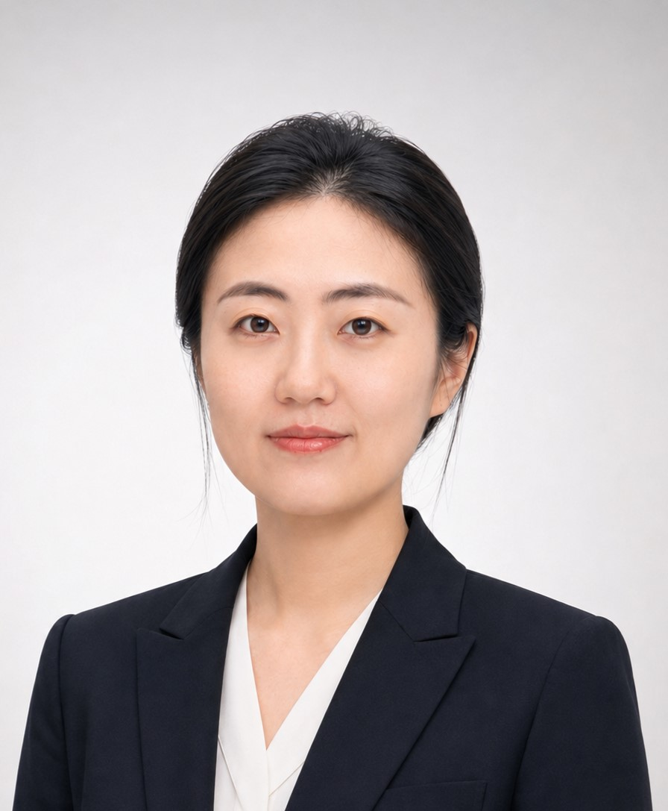

Smoothing Boundary Layer-Based Iterative CKF and Its Application to Attitude Estimation in Cooperative USV Swarms
IEEE Transactions on Industrial Informatics (TII), 2026 (SCI, TOP, IF: 9.9)
I received my Ph.D. degree in Instrument Science and Technology from Southeast University in June 2026, supervised by Prof. Xiyuan Chen. Prior to this, I worked as a Network Security Engineer at ZTE Corporation from 2020 to 2022. I received my Bachelor's and Master's degrees from Southeast University.
My research interests lie in the scope of Swarm Cooperative Navigation and Positioning, Inertial-based Integrated Navigation Systems in Complex Environments, and Multi-sensor Information Fusion.
Email: chunfeng.shi@hhu.edu.cn
Address: College of Artificial Intelligence and Automation, Hohai Univercity, Changzhou, China
